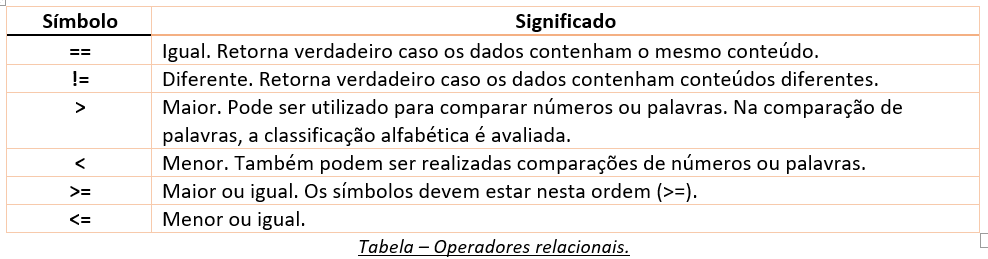

Voltar para a página principal
CAPÍTULO 04 - Condições
Diversas são as situações em um programa em que é necessário criar uma condição para indicar qual tarefa deve ser executada.
Para definir uma condição em um programa, as linguagens de programação utilizam instruções próprias para essa finalidade. Os comandos utilizados para a leitura de dados (entrada), realização de operações (processamento) e apresentação de mensagens (saída) são os mesmos. O que vamos modificar agora é que alguns desses comandos serão inseridos no programa de de estruturas condicionais.
Portanto, será necessário agora adicionar às etapas de entrada, processamento e saída do programa estruturas que definem condições. Uma condição será definida com base no conteúdo de uma variável. Se a idade for maior que 18 anos, se o bairro do cliente for "Centro", entre outros. Depois de definirmos condições simples, vamos avançar um pouco e utilizar os operadores lógicos, que permitem criar condições para analisar duas ou mais comparações em uma mesma instrução. E o raciocínio lógico continua essencial para a montagem dessas estruturas.
Os comandos if...else e switch...case são os responsáveis por criar condições em JavaScript (e na maioria das linguagens).
4.1 If...else (se...senão)

Para criar essa estrutura clássica, utilizamos os comandos if...else (se...senão). Eles possuem algumas variações. É possível utilizar apenas o if (para apresentar uma mensagem caso o cliente seja menor de idade, por exemplo). E também criar vários comandos else (para verificar a classifição etária de um aluno de natação, que poderia ser infantil, juvenil ou adulto).
Exemplos da sintaxe do comando if.
Quando houver apenas um comando que pertence à condição, o uso das chaves não é obrigatório. Contudo, recomenda-se usar em todas as estruturas.
4.2 Operadores relacionais
Para definir as condições utilizadas nas estruturas condicionais, deve-se fazer o uso dos operadores relacionais. A tabela abaixo apresenta os operadores relacionais utilizados em JavaScript Quando inseridas em um programa, cada comparação deve retornar true (verdadeiro) ou false (falso).
Existem ainda os símbolos de = = = (estritamente igual) e != = (estritamente diferente). Eles comparam também o tipo do dado em análise. Assim, '5' = = = 5 retorna falso; e '5' != = 5 retorna verdadeiro.
Vamos construir um exemplo. A leitura do nome e da média de duas notas do aluno. a média das notas deve ser 7.0 ou superior para a aprovação. A mensagem de aprovação é exibida em azul e de reprovação, em verde.

Observe que o código inicia com a criação de referências aos elementos manipulados pelo programa. Na sequência, cria-se um listener (ouvinte) para o evento submit do form. Vamos manter esse padrão em todos os programas do livro para facilitar a compreensão.
O uso dos comandos else é recomendado, pois ele simplifica as condições.
else if significa "senão se".
Em alguns casos, é necessário criar uma condição dentro de outra. É comum termos estruturas de condição ou de repetição (a serem discutidas no próximo capítulo) dentro de outras estruturas em um mesmo programa.
4.3 Operadores lógicos
Parei na página 77